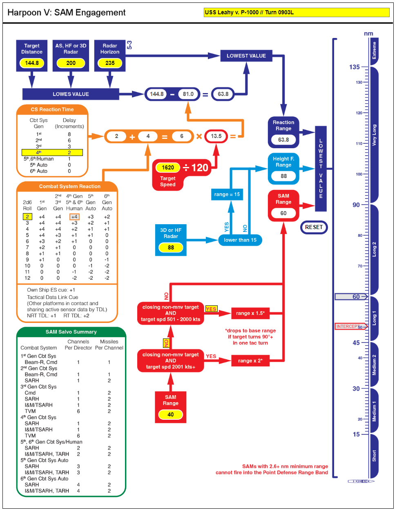
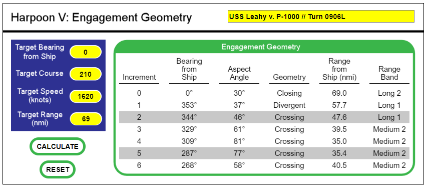
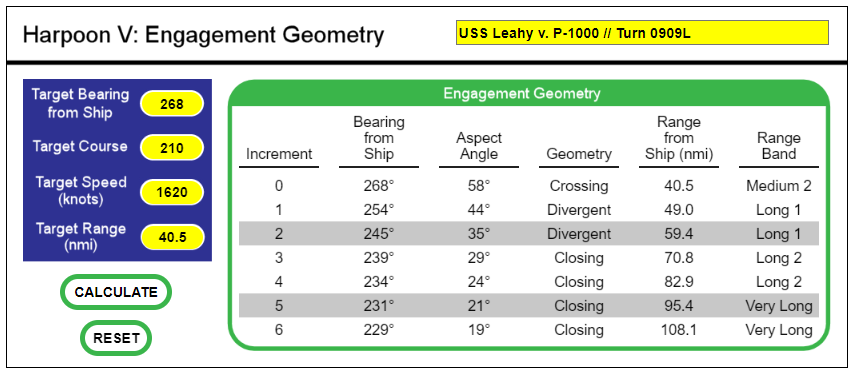

Example for Using Aspect Geometry
This example borrows from the "What is a Crossing Target" article in The Naval SITREP, Issue #63, October 2022. The situation begins at 0900L when a raid of P-1000 Vulkan [SS-N-12 Mod 2] missiles are detected by USS Leahy that appear to be targeting a nearby aircraft carrier.
The missiles are at High altitude and have a speed of 1,620 knots (81 nmi per Tactical Turn). They are on a course of 210 degrees. They were detected at a range of 144.8 nmi after the 0900 movement phase. The first thing we will do is determine the maximum engagement range due to factors such as radar range, radar horizon, combat system, and SAM range.
Several values need to be entered into the SAM Engagement flowchart. The detection ranges in the upper left corner will be filled in first. The current range is 144.8, and the SPS-43 AS range vs. a Small target is 200 nmi (use whichever AS, HF, or 3D radar has the best range). The radar horizon from a Medium ship to a High altitude target is 235 nmi.
Next, select the Combat System (CS) generation from the CS Reaction Time box (4th Gen for Leahy.). For this example, the worst die roll of 2 is selected for the reaction modifier, which gives the CS a total of 6 increments (an entire Tactical Turn) for reaction time. The missile's speed is entered into the Target Speed box, which then gives the total reaction range for the CS. The lowest of either the modified radar range or target distance is passed into the Reaction Range box at right.
The 3D or HF radar range is then entered. The SPS-39 has a range of 88 nmi vs. a small target. Because it is greater than 15 nmi, its value is passed to the Height F. box at right.
Finally, the SAM range is entered. Choose the appropriate Yes/No boxes to get a modifed SAM Range. Select Yes for "closing and speed 501 - 2000 kts" to get a 1.5x modifier to the SAM range.
The range bar to the right will display the maximum engagement range/band (blue pointer), and the maximum intercept range (red pointer). The Intercept range only applies if the target is headed directly towards your ship, and it factors in the incremental movement of the target.
The game advances to the Plotting Phase of the 0903 turn. Here we enter the missile's bearing from the ship (as measured on the table or using SimPlot), course, speed, and range into the Engagement Geometry chart. Press the CALCULATE button to see the aspect geometry results for the current Tactical Turn. Please note that increment zero is the "current status" of the missiles, and increments 1 - 6 represent the status as the missiles move during the turn.
At a glance we can see there will be no interceptions in this turn, as the closest they come will only be 69 nmi. This is beyond the CS reaction and SAM ranges as computed above.
The game advances to the Plotting Phase of the 0906 turn. Using the existing chart, re-enter the bearing and range from increment 6 into the boxes at left (leaving the speed and course the same). The missile's last movement becomes the current status for this new turn. Press the CALCULATE button to get this turn's movement results. Also, you may open a new browser tab and enter the data in a fresh chart to preserve the turn history.
Several things are going to happen this turn. First, the missiles will enter the maximum engagement range in the first movement increment. At the same time, the missiles will begin quickly shifting from closing targets to divergent and crossing targets. The missiles will also reach the Closest Point of Approach (CPA) of 35 nmi in increment 4. Lastly, the missiles will begin moving away from the ship in increment 5.
The game advances to the Plotting Phase of the 0909 turn. Use the same techniques for calculating the results as the previous turn.
The missiles will transition from crossing targets to divergent and closing targets as they move away from your ship (and towards the carrier). Increment 2 will be the last opportunity to engage them.
